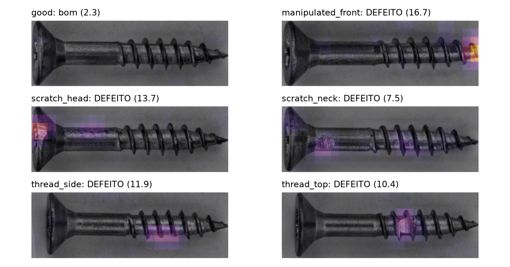

01Problema e dados
Quase todas as peças de uma linha são boas e cada defeito é diferente. Os modelos aprendem só o normal (One-Class) e precisam reconhecer defeitos que nunca viram. Meta: minimizar defeitos aprovados.

MVTec AD, categoria screw. Treino: 320 boas (256 para ajuste, 64 para o limiar). Teste: 41 boas e 119 defeituosas em 5 tipos.
02Segmentar e alinhar

Cinza, CLAHE, Otsu, morfologia, ROI alinhada (cabeça à esquerda, 384 x 128) e HOG.
O alinhamento é a base de tudo: a mesma posição da ROI corresponde sempre à mesma parte do parafuso (cabeça, pescoço, rosca, ponta).
03Vetor global: acaso
Primeira versão: 25.413 atributos por parafuso (HOG, Gabor, bordas, geometria) no teste completo.
| Modelo global | FN /119 | AUC |
|---|---|---|
| Isolation Forest | 100 | 0,63 |
| LOF | 104 | 0,62 |
| One-Class SVM | 110 | 0,44 |
Diagnóstico: AUC por bloco (LOF)
Barras de 0 a 1; 0,5 é o acaso. O HOG global, 0,48, domina o vetor e afoga os blocos que têm sinal. Defeitos pequenos se diluem na variação normal da peça inteira.
04Descritores locais: comparar região por região
Um vetor por parafuso. O detector compara a peça inteira; o defeito se dilui.
Um detector por posição da grade compara cada região só com a mesma região das boas.
Patches de 24 a 48 px sobre a ROI alinhada, brilho normalizado.
HOG, LBP, Gabor, bordas e silhueta: cerca de 60 números.
SVM, LOF ou Isolation Forest por posição, com vizinhas.
Média dos 3 patches mais anômalos.
Protocolo: como o teste já tinha sido visto, ele foi dividido antes dos experimentos. As 168 combinações foram escolhidas com metade dos defeitos (contra as 64 boas reservadas); a outra metade e 21 boas formam um holdout usado uma única vez. Na ablação, o mesmo HOG que valia 0,48 no vetor global chega a 0,916 por patch: o ganho vem da localidade.

Mapas do LOF local no holdout, com o score de cada parafuso (limiar 4,9): a marcação cai sobre a ponta, a cabeça, o pescoço e os filetes danificados.
05Resultado no holdout
| Modelo | FN antes | FN agora | FP agora | AUC agora |
|---|---|---|---|---|
| LOF | 53 | 2 | 3 | 0,958 |
| SVM | 57 | 11 | 3 | 0,903 |
| Isol. Forest | 54 | 19 | 2 | 0,910 |
FN: defeito aprovado (de 61). FP: boa rejeitada (de 21). Antes: modelos globais nas mesmas imagens.

06Curvas ROC

Tracejado: vetor global, perto da diagonal. Contínuo: local, com a mesma cor por detector.
07Conclusão
- Modelo escolhido: LOF com descritores locais. Detecta 59 de 61 defeitos do holdout e rejeita 3 de 21 boas, só com visão clássica e 256 imagens boas.
- Para defeitos pequenos, a representação importa mais que o detector: os mesmos três detectores saíram do acaso para AUC acima de 0,9.
- Cuidados: as boas do teste são mais escuras (viés do dataset) e nunca entraram na seleção; o holdout é pequeno (82 imagens).